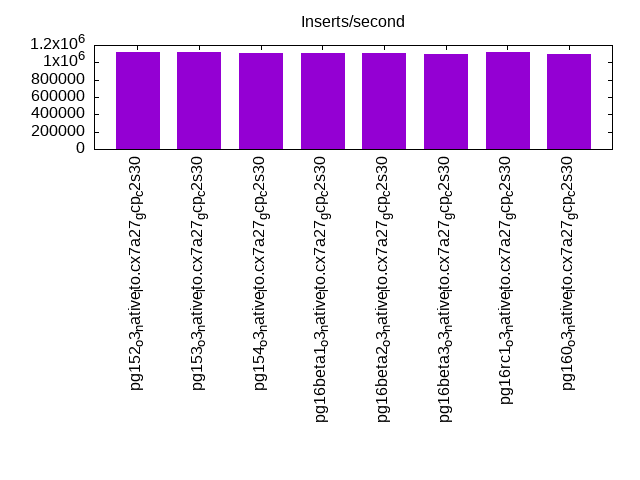
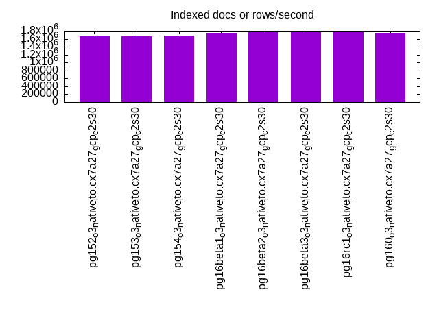
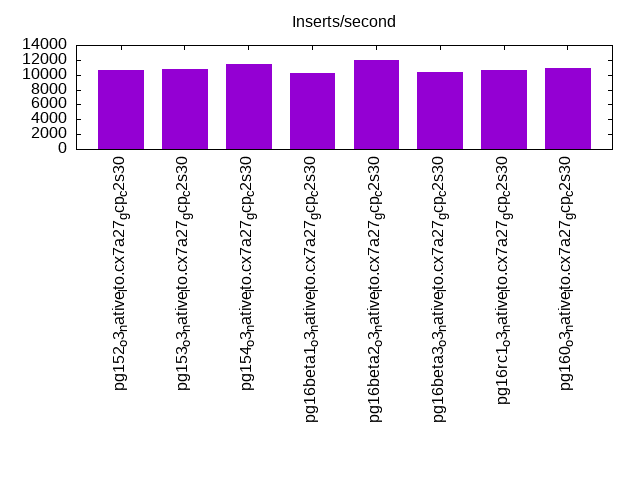
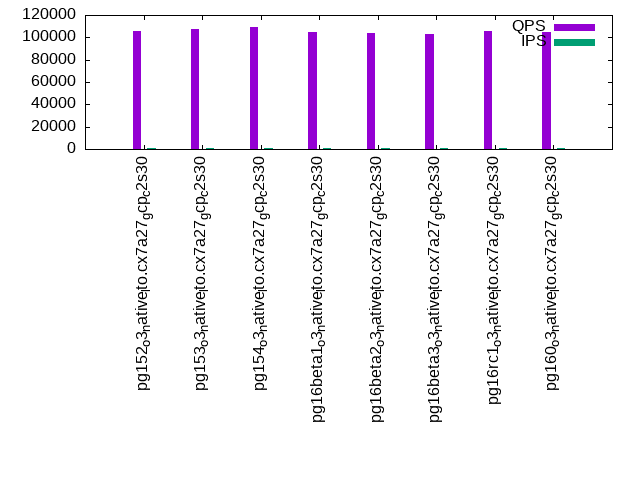
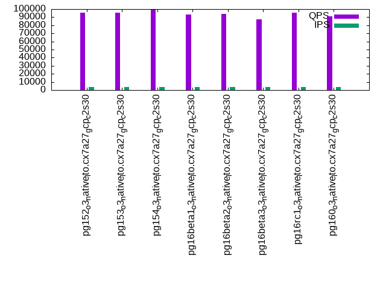
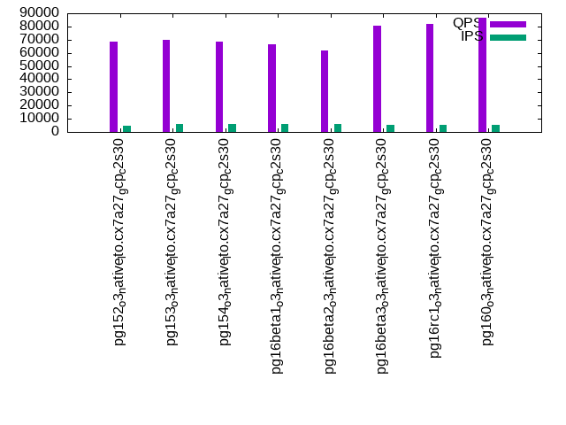

This is a report for the insert benchmark with 4000M docs and 8 client(s). It is generated by scripts (bash, awk, sed) and Tufte might not be impressed. An overview of the insert benchmark is here and a short update is here. Below, by DBMS, I mean DBMS+version.config. An example is my8020.c10b40 where my means MySQL, 8020 is version 8.0.20 and c10b40 is the name for the configuration file.
The test server is a c2-standard-30 with 15 cores, hyperthreads disabled, 120G RAM and XFS with SW RAID 0 across 4 NVMe SSD. The benchmark was run with 8 clients and there were 1 or 3 connections per client (1 for queries or inserts without rate limits, 1+1 for rate limited inserts+deletes). It uses 8 tables, 1 per client. It loads 500M rows per table without secondary indexes, creates secondary indexes, then inserts 60M rows per table with a delete per insert to avoid growing the table. It then does 3 read+write tests for 7200s each that do queries as fast as possible with 100, 500 and then 1000 inserts/second/client concurrent with the queries. There are also deletes to match the inserts and avoid growing the table. The database is larger than memory. Clients and the DBMS share one server. The per-database configs are in the per-database subdirectories here.
The tested DBMS are:
The numbers are inserts/s for l.i0 and l.i1, indexed docs (or rows) /s for l.x and queries/s for q*.2. The values are the average rate over the entire test for inserts (IPS) and queries (QPS). The range of values for IPS and QPS is split into 3 parts: bottom 25%, middle 50%, top 25%. Values in the bottom 25% have a red background, values in the top 25% have a green background and values in the middle have no color. A gray background is used for values that can be ignored because the DBMS did not sustain the target insert rate. Red backgrounds are not used when the minimum value is within 80% of the max value.
| dbms | l.i0 | l.x | l.i1 | q100.1 | q500.1 | q1000.1 |
|---|---|---|---|---|---|---|
| pg152_o3_native_lto.cx7a27_gcp_c2s30 | 1124227 | 1656356 | 10698 | 106073 | 95458 | 68320 |
| pg153_o3_native_lto.cx7a27_gcp_c2s30 | 1119194 | 1668794 | 10816 | 107042 | 95549 | 69868 |
| pg154_o3_native_lto.cx7a27_gcp_c2s30 | 1108340 | 1675084 | 11508 | 109008 | 99230 | 68500 |
| pg16beta1_o3_native_lto.cx7a27_gcp_c2s30 | 1110802 | 1741445 | 10279 | 104975 | 93500 | 66806 |
| pg16beta2_o3_native_lto.cx7a27_gcp_c2s30 | 1103448 | 1766048 | 12046 | 104145 | 94028 | 61780 |
| pg16beta3_o3_native_lto.cx7a27_gcp_c2s30 | 1099203 | 1765269 | 10420 | 103432 | 87501 | 80311 |
| pg16rc1_o3_native_lto.cx7a27_gcp_c2s30 | 1114206 | 1784962 | 10579 | 105571 | 95385 | 81866 |
| pg160_o3_native_lto.cx7a27_gcp_c2s30 | 1099203 | 1746768 | 10938 | 104804 | 90848 | 86807 |
This table has relative throughput, throughput for the DBMS relative to the DBMS in the first line, using the absolute throughput from the previous table. Values less than 0.95 have a yellow background. Values greater than 1.05 have a blue background.
| dbms | l.i0 | l.x | l.i1 | q100.1 | q500.1 | q1000.1 |
|---|---|---|---|---|---|---|
| pg152_o3_native_lto.cx7a27_gcp_c2s30 | 1.00 | 1.00 | 1.00 | 1.00 | 1.00 | 1.00 |
| pg153_o3_native_lto.cx7a27_gcp_c2s30 | 1.00 | 1.01 | 1.01 | 1.01 | 1.00 | 1.02 |
| pg154_o3_native_lto.cx7a27_gcp_c2s30 | 0.99 | 1.01 | 1.08 | 1.03 | 1.04 | 1.00 |
| pg16beta1_o3_native_lto.cx7a27_gcp_c2s30 | 0.99 | 1.05 | 0.96 | 0.99 | 0.98 | 0.98 |
| pg16beta2_o3_native_lto.cx7a27_gcp_c2s30 | 0.98 | 1.07 | 1.13 | 0.98 | 0.99 | 0.90 |
| pg16beta3_o3_native_lto.cx7a27_gcp_c2s30 | 0.98 | 1.07 | 0.97 | 0.98 | 0.92 | 1.18 |
| pg16rc1_o3_native_lto.cx7a27_gcp_c2s30 | 0.99 | 1.08 | 0.99 | 1.00 | 1.00 | 1.20 |
| pg160_o3_native_lto.cx7a27_gcp_c2s30 | 0.98 | 1.05 | 1.02 | 0.99 | 0.95 | 1.27 |
This lists the average rate of inserts/s for the tests that do inserts concurrent with queries. For such tests the query rate is listed in the table above. The read+write tests are setup so that the insert rate should match the target rate every second. Cells that are not at least 95% of the target have a red background to indicate a failure to satisfy the target.
| dbms | q100.1 | q500.1 | q1000.1 |
|---|---|---|---|
| pg152_o3_native_lto.cx7a27_gcp_c2s30 | 798 | 3992 | 4491 |
| pg153_o3_native_lto.cx7a27_gcp_c2s30 | 798 | 3992 | 6177 |
| pg154_o3_native_lto.cx7a27_gcp_c2s30 | 798 | 3992 | 5976 |
| pg16beta1_o3_native_lto.cx7a27_gcp_c2s30 | 798 | 3992 | 5712 |
| pg16beta2_o3_native_lto.cx7a27_gcp_c2s30 | 798 | 3992 | 6012 |
| pg16beta3_o3_native_lto.cx7a27_gcp_c2s30 | 798 | 3992 | 5545 |
| pg16rc1_o3_native_lto.cx7a27_gcp_c2s30 | 798 | 3992 | 5273 |
| pg160_o3_native_lto.cx7a27_gcp_c2s30 | 798 | 3991 | 5446 |
| target | 800 | 4000 | 8000 |
l.i0: load without secondary indexes. Graphs for performance per 1-second interval are here.
Average throughput:
Insert response time histogram: each cell has the percentage of responses that take <= the time in the header and max is the max response time in seconds. For the max column values in the top 25% of the range have a red background and in the bottom 25% of the range have a green background. The red background is not used when the min value is within 80% of the max value.
| dbms | 256us | 1ms | 4ms | 16ms | 64ms | 256ms | 1s | 4s | 16s | gt | max |
|---|---|---|---|---|---|---|---|---|---|---|---|
| pg152_o3_native_lto.cx7a27_gcp_c2s30 | 97.623 | 2.342 | 0.028 | 0.003 | 0.004 | 0.001 | 0.588 | ||||
| pg153_o3_native_lto.cx7a27_gcp_c2s30 | 97.538 | 2.426 | 0.028 | 0.004 | 0.004 | nonzero | 0.409 | ||||
| pg154_o3_native_lto.cx7a27_gcp_c2s30 | 97.325 | 2.641 | 0.027 | 0.003 | 0.003 | nonzero | 0.551 | ||||
| pg16beta1_o3_native_lto.cx7a27_gcp_c2s30 | 97.561 | 2.403 | 0.027 | 0.004 | 0.004 | nonzero | 0.449 | ||||
| pg16beta2_o3_native_lto.cx7a27_gcp_c2s30 | 97.656 | 2.309 | 0.029 | 0.003 | 0.003 | nonzero | 0.409 | ||||
| pg16beta3_o3_native_lto.cx7a27_gcp_c2s30 | 97.538 | 2.428 | 0.026 | 0.004 | 0.004 | nonzero | 0.401 | ||||
| pg16rc1_o3_native_lto.cx7a27_gcp_c2s30 | 97.636 | 2.330 | 0.028 | 0.003 | 0.003 | nonzero | 0.502 | ||||
| pg160_o3_native_lto.cx7a27_gcp_c2s30 | 97.569 | 2.393 | 0.029 | 0.004 | 0.004 | 0.001 | 0.953 |
Performance metrics for the DBMS listed above. Some are normalized by throughput, others are not. Legend for results is here.
ips qps rps rmbps wps wmbps rpq rkbpq wpi wkbpi csps cpups cspq cpupq dbgb1 dbgb2 rss maxop p50 p99 tag 1124227 0 562 4.4 1397.1 258.5 0.000 0.004 0.001 0.235 92574 85.3 0.082 11 382.7 452.8 19.0 0.588 143344 89237 4000m.pg152_o3_native_lto.cx7a27_gcp_c2s30 1119194 0 555 4.4 1396.3 258.1 0.000 0.004 0.001 0.236 93021 85.0 0.083 11 382.7 452.8 3.4 0.409 142446 96594 4000m.pg153_o3_native_lto.cx7a27_gcp_c2s30 1108340 0 542 4.3 1384.0 252.3 0.000 0.004 0.001 0.233 92380 84.8 0.083 11 382.7 452.8 8.9 0.551 141147 101223 4000m.pg154_o3_native_lto.cx7a27_gcp_c2s30 1110802 0 556 4.4 1402.2 253.6 0.001 0.004 0.001 0.234 92227 84.9 0.083 11 382.7 452.8 9.1 0.449 141696 97525 4000m.pg16beta1_o3_native_lto.cx7a27_gcp_c2s30 1103448 0 546 4.3 1395.1 251.4 0.000 0.004 0.001 0.233 92151 84.8 0.084 12 382.7 452.8 4.5 0.409 140547 97829 4000m.pg16beta2_o3_native_lto.cx7a27_gcp_c2s30 1099203 0 550 4.3 1375.2 248.7 0.001 0.004 0.001 0.232 92516 84.7 0.084 12 382.7 452.8 4.5 0.401 139894 94497 4000m.pg16beta3_o3_native_lto.cx7a27_gcp_c2s30 1114206 0 559 4.4 1381.9 254.3 0.001 0.004 0.001 0.234 92259 85.2 0.083 11 382.7 452.8 17.8 0.502 141946 95695 4000m.pg16rc1_o3_native_lto.cx7a27_gcp_c2s30 1099203 0 543 4.3 1383.5 249.5 0.000 0.004 0.001 0.232 91593 84.6 0.083 12 382.7 452.8 10.5 0.953 140847 72820 4000m.pg160_o3_native_lto.cx7a27_gcp_c2s30
l.x: create secondary indexes.
Average throughput:
Performance metrics for the DBMS listed above. Some are normalized by throughput, others are not. Legend for results is here.
ips qps rps rmbps wps wmbps rpq rkbpq wpi wkbpi csps cpups cspq cpupq dbgb1 dbgb2 rss maxop p50 p99 tag 1656356 0 3490 760.8 1279.1 285.9 0.002 0.470 0.001 0.177 12648 37.2 0.008 3 735.2 805.2 56.9 0.002 NA NA 4000m.pg152_o3_native_lto.cx7a27_gcp_c2s30 1668794 0 3576 777.7 1286.6 287.0 0.002 0.477 0.001 0.176 12684 37.2 0.008 3 735.2 805.2 56.9 0.002 NA NA 4000m.pg153_o3_native_lto.cx7a27_gcp_c2s30 1675084 0 3384 742.3 1281.3 287.6 0.002 0.454 0.001 0.176 12025 38.2 0.007 3 735.2 805.2 56.7 0.010 NA NA 4000m.pg154_o3_native_lto.cx7a27_gcp_c2s30 1741445 0 2945 672.4 1327.8 302.5 0.002 0.395 0.001 0.178 17410 39.0 0.010 3 735.2 804.9 56.8 0.002 NA NA 4000m.pg16beta1_o3_native_lto.cx7a27_gcp_c2s30 1766048 0 2974 681.6 1342.1 305.2 0.002 0.395 0.001 0.177 17733 39.2 0.010 3 735.2 804.8 56.8 0.002 NA NA 4000m.pg16beta2_o3_native_lto.cx7a27_gcp_c2s30 1765269 0 2962 676.7 1360.5 305.6 0.002 0.393 0.001 0.177 18205 39.4 0.010 3 735.2 804.9 56.8 0.024 NA NA 4000m.pg16beta3_o3_native_lto.cx7a27_gcp_c2s30 1784962 0 2839 658.6 1356.0 309.5 0.002 0.378 0.001 0.178 17389 39.6 0.010 3 735.2 805.2 56.8 0.002 NA NA 4000m.pg16rc1_o3_native_lto.cx7a27_gcp_c2s30 1746768 0 2886 667.8 1337.0 303.1 0.002 0.391 0.001 0.178 17624 38.9 0.010 3 735.2 804.9 57.0 0.002 NA NA 4000m.pg160_o3_native_lto.cx7a27_gcp_c2s30
l.i1: continue load after secondary indexes created. Graphs for performance per 1-second interval are here.
Average throughput:
Insert response time histogram: each cell has the percentage of responses that take <= the time in the header and max is the max response time in seconds. For the max column values in the top 25% of the range have a red background and in the bottom 25% of the range have a green background. The red background is not used when the min value is within 80% of the max value.
| dbms | 256us | 1ms | 4ms | 16ms | 64ms | 256ms | 1s | 4s | 16s | gt | max |
|---|---|---|---|---|---|---|---|---|---|---|---|
| pg152_o3_native_lto.cx7a27_gcp_c2s30 | 34.624 | 40.909 | 24.439 | 0.027 | 0.002 | nonzero | 1.654 | ||||
| pg153_o3_native_lto.cx7a27_gcp_c2s30 | 51.676 | 25.635 | 22.678 | 0.010 | 0.001 | 0.780 | |||||
| pg154_o3_native_lto.cx7a27_gcp_c2s30 | 40.787 | 41.197 | 17.995 | 0.020 | 0.001 | 0.952 | |||||
| pg16beta1_o3_native_lto.cx7a27_gcp_c2s30 | 31.566 | 47.289 | 21.124 | 0.020 | 0.001 | 0.884 | |||||
| pg16beta2_o3_native_lto.cx7a27_gcp_c2s30 | 46.238 | 33.627 | 20.119 | 0.014 | 0.002 | 0.800 | |||||
| pg16beta3_o3_native_lto.cx7a27_gcp_c2s30 | 51.105 | 28.142 | 20.740 | 0.012 | 0.001 | 0.794 | |||||
| pg16rc1_o3_native_lto.cx7a27_gcp_c2s30 | 46.615 | 27.383 | 25.989 | 0.012 | 0.001 | nonzero | 1.272 | ||||
| pg160_o3_native_lto.cx7a27_gcp_c2s30 | 42.877 | 39.241 | 17.867 | 0.014 | 0.001 | 0.737 |
Delete response time histogram: each cell has the percentage of responses that take <= the time in the header and max is the max response time in seconds. For the max column values in the top 25% of the range have a red background and in the bottom 25% of the range have a green background. The red background is not used when the min value is within 80% of the max value.
| dbms | 256us | 1ms | 4ms | 16ms | 64ms | 256ms | 1s | 4s | 16s | gt | max |
|---|---|---|---|---|---|---|---|---|---|---|---|
| pg152_o3_native_lto.cx7a27_gcp_c2s30 | 69.341 | 6.121 | 0.598 | 1.996 | 6.395 | 15.548 | nonzero | 0.671 | |||
| pg153_o3_native_lto.cx7a27_gcp_c2s30 | 72.355 | 4.073 | 0.793 | 2.240 | 7.851 | 12.688 | nonzero | 0.302 | |||
| pg154_o3_native_lto.cx7a27_gcp_c2s30 | 69.471 | 5.804 | 0.486 | 1.607 | 11.367 | 11.260 | 0.005 | 0.421 | |||
| pg16beta1_o3_native_lto.cx7a27_gcp_c2s30 | 68.022 | 7.214 | 0.906 | 2.714 | 7.518 | 13.615 | 0.011 | 0.553 | |||
| pg16beta2_o3_native_lto.cx7a27_gcp_c2s30 | 68.638 | 6.037 | 0.497 | 1.742 | 11.487 | 11.597 | nonzero | 0.532 | |||
| pg16beta3_o3_native_lto.cx7a27_gcp_c2s30 | 69.710 | 6.616 | 1.017 | 2.555 | 6.610 | 13.386 | 0.107 | 0.475 | |||
| pg16rc1_o3_native_lto.cx7a27_gcp_c2s30 | 67.573 | 8.014 | 0.681 | 2.134 | 8.913 | 12.642 | 0.042 | nonzero | 1.208 | ||
| pg160_o3_native_lto.cx7a27_gcp_c2s30 | 71.105 | 3.464 | 0.728 | 2.239 | 7.972 | 14.486 | 0.006 | 0.369 |
Performance metrics for the DBMS listed above. Some are normalized by throughput, others are not. Legend for results is here.
ips qps rps rmbps wps wmbps rpq rkbpq wpi wkbpi csps cpups cspq cpupq dbgb1 dbgb2 rss maxop p50 p99 tag 10698 0 8974 105.0 11848.5 163.4 0.839 10.055 1.108 15.639 23056 42.5 2.155 596 781.9 852.0 69.2 1.654 350 250 4000m.pg152_o3_native_lto.cx7a27_gcp_c2s30 10816 0 7467 90.1 9424.3 132.0 0.690 8.528 0.871 12.494 20165 36.3 1.864 503 782.7 839.8 60.3 0.780 450 300 4000m.pg153_o3_native_lto.cx7a27_gcp_c2s30 11508 0 8292 97.3 11320.2 155.0 0.721 8.660 0.984 13.794 21921 34.4 1.905 448 781.9 851.9 70.4 0.952 250 200 4000m.pg154_o3_native_lto.cx7a27_gcp_c2s30 10279 0 8560 102.0 11696.8 163.1 0.833 10.159 1.138 16.245 22097 41.3 2.150 603 779.6 846.8 23.5 0.884 350 200 4000m.pg16beta1_o3_native_lto.cx7a27_gcp_c2s30 12046 0 8187 93.9 10914.8 152.1 0.680 7.984 0.906 12.930 22077 35.0 1.833 436 780.6 842.2 69.6 0.800 849 450 4000m.pg16beta2_o3_native_lto.cx7a27_gcp_c2s30 10420 0 7188 89.3 9118.1 133.0 0.690 8.779 0.875 13.069 19404 42.6 1.862 613 780.0 850.1 55.6 0.794 250 200 4000m.pg16beta3_o3_native_lto.cx7a27_gcp_c2s30 10579 0 7889 90.9 9804.9 134.1 0.746 8.799 0.927 12.984 20718 37.6 1.958 533 781.5 847.1 27.8 1.272 499 250 4000m.pg16rc1_o3_native_lto.cx7a27_gcp_c2s30 10938 0 7416 88.4 9966.8 138.1 0.678 8.273 0.911 12.931 19913 39.0 1.821 535 780.6 849.3 35.4 0.737 649 400 4000m.pg160_o3_native_lto.cx7a27_gcp_c2s30
q100.1: range queries with 100 insert/s per client. Graphs for performance per 1-second interval are here.
Average throughput:
Query response time histogram: each cell has the percentage of responses that take <= the time in the header and max is the max response time in seconds. For max values in the top 25% of the range have a red background and in the bottom 25% of the range have a green background. The red background is not used when the min value is within 80% of the max value.
| dbms | 256us | 1ms | 4ms | 16ms | 64ms | 256ms | 1s | 4s | 16s | gt | max |
|---|---|---|---|---|---|---|---|---|---|---|---|
| pg152_o3_native_lto.cx7a27_gcp_c2s30 | 99.902 | 0.097 | 0.001 | nonzero | nonzero | nonzero | 0.149 | ||||
| pg153_o3_native_lto.cx7a27_gcp_c2s30 | 99.895 | 0.104 | 0.001 | nonzero | nonzero | nonzero | 0.154 | ||||
| pg154_o3_native_lto.cx7a27_gcp_c2s30 | 99.920 | 0.079 | 0.001 | nonzero | nonzero | 0.058 | |||||
| pg16beta1_o3_native_lto.cx7a27_gcp_c2s30 | 99.923 | 0.076 | 0.001 | nonzero | nonzero | nonzero | 0.188 | ||||
| pg16beta2_o3_native_lto.cx7a27_gcp_c2s30 | 99.911 | 0.089 | nonzero | nonzero | nonzero | nonzero | 0.157 | ||||
| pg16beta3_o3_native_lto.cx7a27_gcp_c2s30 | 99.909 | 0.090 | 0.001 | nonzero | nonzero | nonzero | 0.154 | ||||
| pg16rc1_o3_native_lto.cx7a27_gcp_c2s30 | 99.922 | 0.078 | 0.001 | nonzero | nonzero | nonzero | 0.071 | ||||
| pg160_o3_native_lto.cx7a27_gcp_c2s30 | 99.909 | 0.090 | 0.001 | nonzero | nonzero | nonzero | 0.146 |
Insert response time histogram: each cell has the percentage of responses that take <= the time in the header and max is the max response time in seconds. For max values in the top 25% of the range have a red background and in the bottom 25% of the range have a green background. The red background is not used when the min value is within 80% of the max value.
| dbms | 256us | 1ms | 4ms | 16ms | 64ms | 256ms | 1s | 4s | 16s | gt | max |
|---|---|---|---|---|---|---|---|---|---|---|---|
| pg152_o3_native_lto.cx7a27_gcp_c2s30 | 4.447 | 11.063 | 84.487 | 0.003 | 0.072 | ||||||
| pg153_o3_native_lto.cx7a27_gcp_c2s30 | 0.004 | 14.098 | 85.888 | 0.009 | 0.001 | 0.460 | |||||
| pg154_o3_native_lto.cx7a27_gcp_c2s30 | 4.647 | 10.548 | 84.786 | 0.020 | 0.158 | ||||||
| pg16beta1_o3_native_lto.cx7a27_gcp_c2s30 | 0.162 | 15.101 | 84.734 | 0.003 | 0.119 | ||||||
| pg16beta2_o3_native_lto.cx7a27_gcp_c2s30 | 5.382 | 7.401 | 87.216 | 0.001 | 0.084 | ||||||
| pg16beta3_o3_native_lto.cx7a27_gcp_c2s30 | 3.018 | 11.003 | 85.973 | 0.006 | 0.106 | ||||||
| pg16rc1_o3_native_lto.cx7a27_gcp_c2s30 | 0.006 | 16.148 | 83.840 | 0.005 | 0.132 | ||||||
| pg160_o3_native_lto.cx7a27_gcp_c2s30 | 0.952 | 13.109 | 85.926 | 0.013 | 0.254 |
Delete response time histogram: each cell has the percentage of responses that take <= the time in the header and max is the max response time in seconds. For max values in the top 25% of the range have a red background and in the bottom 25% of the range have a green background. The red background is not used when the min value is within 80% of the max value.
| dbms | 256us | 1ms | 4ms | 16ms | 64ms | 256ms | 1s | 4s | 16s | gt | max |
|---|---|---|---|---|---|---|---|---|---|---|---|
| pg152_o3_native_lto.cx7a27_gcp_c2s30 | 56.229 | 37.779 | 1.849 | 4.142 | 0.001 | 0.019 | |||||
| pg153_o3_native_lto.cx7a27_gcp_c2s30 | 40.080 | 27.979 | 18.944 | 12.997 | 0.001 | 0.019 | |||||
| pg154_o3_native_lto.cx7a27_gcp_c2s30 | 58.477 | 30.595 | 6.216 | 4.707 | 0.004 | 0.022 | |||||
| pg16beta1_o3_native_lto.cx7a27_gcp_c2s30 | 48.469 | 33.853 | 10.627 | 7.049 | 0.003 | 0.024 | |||||
| pg16beta2_o3_native_lto.cx7a27_gcp_c2s30 | 35.272 | 31.615 | 16.049 | 17.058 | 0.005 | 0.027 | |||||
| pg16beta3_o3_native_lto.cx7a27_gcp_c2s30 | 41.202 | 35.166 | 5.500 | 15.615 | 2.517 | 0.029 | |||||
| pg16rc1_o3_native_lto.cx7a27_gcp_c2s30 | 63.411 | 36.403 | 0.185 | 0.001 | 0.016 | ||||||
| pg160_o3_native_lto.cx7a27_gcp_c2s30 | 41.762 | 36.163 | 10.860 | 11.210 | 0.004 | 0.020 |
Performance metrics for the DBMS listed above. Some are normalized by throughput, others are not. Legend for results is here.
ips qps rps rmbps wps wmbps rpq rkbpq wpi wkbpi csps cpups cspq cpupq dbgb1 dbgb2 rss maxop p50 p99 tag 798 106073 1421 11.9 1554.0 18.6 0.013 0.115 1.947 23.917 406806 53.2 3.835 75 782.0 850.3 71.0 0.149 13265 12882 4000m.pg152_o3_native_lto.cx7a27_gcp_c2s30 798 107042 1382 11.7 1552.3 19.1 0.013 0.112 1.945 24.549 410248 53.2 3.833 75 782.8 851.6 71.0 0.154 13345 8458 4000m.pg153_o3_native_lto.cx7a27_gcp_c2s30 798 109008 1373 11.6 1547.7 20.9 0.013 0.109 1.939 26.825 417734 53.2 3.832 73 782.1 847.4 71.0 0.058 13393 13154 4000m.pg154_o3_native_lto.cx7a27_gcp_c2s30 798 104975 1344 11.4 1485.4 18.4 0.013 0.112 1.861 23.557 402328 53.2 3.833 76 779.9 845.5 71.0 0.188 12999 12290 4000m.pg16beta1_o3_native_lto.cx7a27_gcp_c2s30 798 104145 1368 11.7 1491.3 18.6 0.013 0.115 1.868 23.815 399312 53.3 3.834 77 780.8 846.1 71.0 0.157 13042 9494 4000m.pg16beta2_o3_native_lto.cx7a27_gcp_c2s30 798 103432 1375 11.7 1498.9 18.5 0.013 0.116 1.878 23.746 396647 53.4 3.835 77 780.2 847.6 71.0 0.154 12834 12248 4000m.pg16beta3_o3_native_lto.cx7a27_gcp_c2s30 798 105571 1337 11.4 1549.2 20.4 0.013 0.111 1.941 26.199 404666 53.1 3.833 75 781.6 850.4 71.0 0.071 13170 12482 4000m.pg16rc1_o3_native_lto.cx7a27_gcp_c2s30 798 104804 1363 11.6 1488.4 18.8 0.013 0.113 1.864 24.160 401660 53.3 3.832 76 780.8 847.9 71.0 0.146 13127 12722 4000m.pg160_o3_native_lto.cx7a27_gcp_c2s30
q500.1: range queries with 500 insert/s per client. Graphs for performance per 1-second interval are here.
Average throughput:
Query response time histogram: each cell has the percentage of responses that take <= the time in the header and max is the max response time in seconds. For max values in the top 25% of the range have a red background and in the bottom 25% of the range have a green background. The red background is not used when the min value is within 80% of the max value.
| dbms | 256us | 1ms | 4ms | 16ms | 64ms | 256ms | 1s | 4s | 16s | gt | max |
|---|---|---|---|---|---|---|---|---|---|---|---|
| pg152_o3_native_lto.cx7a27_gcp_c2s30 | 99.867 | 0.128 | 0.004 | 0.001 | nonzero | 0.027 | |||||
| pg153_o3_native_lto.cx7a27_gcp_c2s30 | 99.861 | 0.133 | 0.004 | 0.001 | nonzero | 0.024 | |||||
| pg154_o3_native_lto.cx7a27_gcp_c2s30 | 99.878 | 0.117 | 0.004 | 0.001 | nonzero | 0.024 | |||||
| pg16beta1_o3_native_lto.cx7a27_gcp_c2s30 | 99.836 | 0.159 | 0.004 | 0.001 | nonzero | 0.025 | |||||
| pg16beta2_o3_native_lto.cx7a27_gcp_c2s30 | 99.902 | 0.096 | 0.002 | nonzero | nonzero | 0.024 | |||||
| pg16beta3_o3_native_lto.cx7a27_gcp_c2s30 | 99.801 | 0.193 | 0.005 | 0.001 | nonzero | 0.025 | |||||
| pg16rc1_o3_native_lto.cx7a27_gcp_c2s30 | 99.878 | 0.120 | 0.002 | nonzero | nonzero | 0.026 | |||||
| pg160_o3_native_lto.cx7a27_gcp_c2s30 | 99.872 | 0.125 | 0.003 | 0.001 | nonzero | 0.023 |
Insert response time histogram: each cell has the percentage of responses that take <= the time in the header and max is the max response time in seconds. For max values in the top 25% of the range have a red background and in the bottom 25% of the range have a green background. The red background is not used when the min value is within 80% of the max value.
| dbms | 256us | 1ms | 4ms | 16ms | 64ms | 256ms | 1s | 4s | 16s | gt | max |
|---|---|---|---|---|---|---|---|---|---|---|---|
| pg152_o3_native_lto.cx7a27_gcp_c2s30 | 11.170 | 88.830 | 0.001 | 0.071 | |||||||
| pg153_o3_native_lto.cx7a27_gcp_c2s30 | 14.407 | 85.592 | nonzero | 0.080 | |||||||
| pg154_o3_native_lto.cx7a27_gcp_c2s30 | 18.431 | 81.568 | nonzero | 0.067 | |||||||
| pg16beta1_o3_native_lto.cx7a27_gcp_c2s30 | 12.186 | 87.814 | 0.059 | ||||||||
| pg16beta2_o3_native_lto.cx7a27_gcp_c2s30 | 5.110 | 94.890 | 0.058 | ||||||||
| pg16beta3_o3_native_lto.cx7a27_gcp_c2s30 | 8.037 | 91.963 | 0.062 | ||||||||
| pg16rc1_o3_native_lto.cx7a27_gcp_c2s30 | 4.414 | 95.586 | nonzero | 0.065 | |||||||
| pg160_o3_native_lto.cx7a27_gcp_c2s30 | 6.451 | 93.549 | 0.062 |
Delete response time histogram: each cell has the percentage of responses that take <= the time in the header and max is the max response time in seconds. For max values in the top 25% of the range have a red background and in the bottom 25% of the range have a green background. The red background is not used when the min value is within 80% of the max value.
| dbms | 256us | 1ms | 4ms | 16ms | 64ms | 256ms | 1s | 4s | 16s | gt | max |
|---|---|---|---|---|---|---|---|---|---|---|---|
| pg152_o3_native_lto.cx7a27_gcp_c2s30 | 55.251 | 9.609 | 0.165 | 3.745 | 31.224 | 0.006 | 0.086 | ||||
| pg153_o3_native_lto.cx7a27_gcp_c2s30 | 43.493 | 8.169 | 0.124 | 10.147 | 38.060 | 0.006 | 0.080 | ||||
| pg154_o3_native_lto.cx7a27_gcp_c2s30 | 50.390 | 8.203 | 0.173 | 6.323 | 34.910 | 0.001 | 0.078 | ||||
| pg16beta1_o3_native_lto.cx7a27_gcp_c2s30 | 50.678 | 10.140 | 0.154 | 5.808 | 33.216 | 0.004 | 0.082 | ||||
| pg16beta2_o3_native_lto.cx7a27_gcp_c2s30 | 82.760 | 11.738 | 0.173 | 5.281 | 0.048 | 0.033 | |||||
| pg16beta3_o3_native_lto.cx7a27_gcp_c2s30 | 48.445 | 8.999 | 0.138 | 3.863 | 38.547 | 0.008 | 0.082 | ||||
| pg16rc1_o3_native_lto.cx7a27_gcp_c2s30 | 85.633 | 10.142 | 0.205 | 0.010 | 4.010 | 0.051 | |||||
| pg160_o3_native_lto.cx7a27_gcp_c2s30 | 69.432 | 10.276 | 0.143 | 5.422 | 14.727 | 0.053 |
Performance metrics for the DBMS listed above. Some are normalized by throughput, others are not. Legend for results is here.
ips qps rps rmbps wps wmbps rpq rkbpq wpi wkbpi csps cpups cspq cpupq dbgb1 dbgb2 rss maxop p50 p99 tag 3992 95458 5949 49.4 7813.6 86.8 0.062 0.530 1.958 22.274 350130 60.7 3.668 95 782.5 852.6 71.0 0.027 11795 11092 4000m.pg152_o3_native_lto.cx7a27_gcp_c2s30 3992 95549 5924 49.3 7684.1 85.6 0.062 0.528 1.925 21.955 349512 61.5 3.658 97 783.3 853.4 71.0 0.024 11930 10740 4000m.pg153_o3_native_lto.cx7a27_gcp_c2s30 3992 99230 5907 49.0 7822.2 96.4 0.060 0.505 1.959 24.730 360258 60.8 3.631 92 783.5 853.5 71.0 0.024 12295 11140 4000m.pg154_o3_native_lto.cx7a27_gcp_c2s30 3992 93500 5909 49.1 7902.1 87.2 0.063 0.538 1.980 22.375 343430 61.1 3.673 98 781.2 851.2 71.0 0.025 11571 10341 4000m.pg16beta1_o3_native_lto.cx7a27_gcp_c2s30 3992 94028 5901 49.1 7889.8 88.7 0.063 0.535 1.977 22.746 367919 56.5 3.913 90 781.8 851.9 71.0 0.024 11683 11172 4000m.pg16beta2_o3_native_lto.cx7a27_gcp_c2s30 3992 87501 5924 49.2 7864.9 86.7 0.068 0.576 1.970 22.246 326548 62.2 3.732 107 781.0 851.1 71.0 0.025 11124 9541 4000m.pg16beta3_o3_native_lto.cx7a27_gcp_c2s30 3992 95385 5896 49.0 7705.6 100.5 0.062 0.526 1.930 25.781 371745 56.9 3.897 89 782.7 852.8 71.0 0.026 11811 10809 4000m.pg16rc1_o3_native_lto.cx7a27_gcp_c2s30 3991 90848 5914 49.2 7846.6 86.9 0.065 0.554 1.966 22.295 352013 58.8 3.875 97 781.9 851.9 71.0 0.023 11315 10105 4000m.pg160_o3_native_lto.cx7a27_gcp_c2s30
q1000.1: range queries with 1000 insert/s per client. Graphs for performance per 1-second interval are here.
Average throughput:
Query response time histogram: each cell has the percentage of responses that take <= the time in the header and max is the max response time in seconds. For max values in the top 25% of the range have a red background and in the bottom 25% of the range have a green background. The red background is not used when the min value is within 80% of the max value.
| dbms | 256us | 1ms | 4ms | 16ms | 64ms | 256ms | 1s | 4s | 16s | gt | max |
|---|---|---|---|---|---|---|---|---|---|---|---|
| pg152_o3_native_lto.cx7a27_gcp_c2s30 | 99.771 | 0.218 | 0.009 | 0.003 | nonzero | 0.036 | |||||
| pg153_o3_native_lto.cx7a27_gcp_c2s30 | 99.667 | 0.321 | 0.009 | 0.003 | nonzero | 0.026 | |||||
| pg154_o3_native_lto.cx7a27_gcp_c2s30 | 99.714 | 0.275 | 0.008 | 0.003 | nonzero | nonzero | nonzero | nonzero | 1.184 | ||
| pg16beta1_o3_native_lto.cx7a27_gcp_c2s30 | 99.572 | 0.418 | 0.008 | 0.002 | nonzero | 0.026 | |||||
| pg16beta2_o3_native_lto.cx7a27_gcp_c2s30 | 99.525 | 0.467 | 0.006 | 0.001 | nonzero | 0.027 | |||||
| pg16beta3_o3_native_lto.cx7a27_gcp_c2s30 | 99.734 | 0.256 | 0.008 | 0.003 | nonzero | 0.032 | |||||
| pg16rc1_o3_native_lto.cx7a27_gcp_c2s30 | 99.715 | 0.274 | 0.008 | 0.003 | nonzero | 0.036 | |||||
| pg160_o3_native_lto.cx7a27_gcp_c2s30 | 99.804 | 0.187 | 0.007 | 0.002 | nonzero | 0.032 |
Insert response time histogram: each cell has the percentage of responses that take <= the time in the header and max is the max response time in seconds. For max values in the top 25% of the range have a red background and in the bottom 25% of the range have a green background. The red background is not used when the min value is within 80% of the max value.
| dbms | 256us | 1ms | 4ms | 16ms | 64ms | 256ms | 1s | 4s | 16s | gt | max |
|---|---|---|---|---|---|---|---|---|---|---|---|
| pg152_o3_native_lto.cx7a27_gcp_c2s30 | nonzero | 29.928 | 70.071 | 0.001 | 0.080 | ||||||
| pg153_o3_native_lto.cx7a27_gcp_c2s30 | 15.694 | 84.306 | 0.063 | ||||||||
| pg154_o3_native_lto.cx7a27_gcp_c2s30 | 16.532 | 83.452 | 0.009 | 0.005 | 0.001 | 1.223 | |||||
| pg16beta1_o3_native_lto.cx7a27_gcp_c2s30 | 13.830 | 86.170 | 0.062 | ||||||||
| pg16beta2_o3_native_lto.cx7a27_gcp_c2s30 | 0.042 | 5.563 | 94.395 | nonzero | 0.071 | ||||||
| pg16beta3_o3_native_lto.cx7a27_gcp_c2s30 | 24.749 | 75.251 | nonzero | 0.071 | |||||||
| pg16rc1_o3_native_lto.cx7a27_gcp_c2s30 | 20.297 | 79.702 | 0.001 | 0.092 | |||||||
| pg160_o3_native_lto.cx7a27_gcp_c2s30 | 34.028 | 65.972 | 0.001 | 0.070 |
Delete response time histogram: each cell has the percentage of responses that take <= the time in the header and max is the max response time in seconds. For max values in the top 25% of the range have a red background and in the bottom 25% of the range have a green background. The red background is not used when the min value is within 80% of the max value.
| dbms | 256us | 1ms | 4ms | 16ms | 64ms | 256ms | 1s | 4s | 16s | gt | max |
|---|---|---|---|---|---|---|---|---|---|---|---|
| pg152_o3_native_lto.cx7a27_gcp_c2s30 | 40.406 | 18.234 | 0.143 | 0.023 | 16.606 | 24.589 | nonzero | 0.432 | |||
| pg153_o3_native_lto.cx7a27_gcp_c2s30 | 56.969 | 17.796 | 0.134 | 0.024 | 11.606 | 13.470 | 0.229 | ||||
| pg154_o3_native_lto.cx7a27_gcp_c2s30 | 61.245 | 15.558 | 0.123 | 0.025 | 10.639 | 12.407 | 0.003 | 0.001 | 1.225 | ||
| pg16beta1_o3_native_lto.cx7a27_gcp_c2s30 | 49.779 | 25.168 | 0.178 | 0.029 | 9.345 | 15.500 | 0.159 | ||||
| pg16beta2_o3_native_lto.cx7a27_gcp_c2s30 | 60.849 | 30.248 | 0.189 | 0.023 | 2.477 | 6.214 | 0.158 | ||||
| pg16beta3_o3_native_lto.cx7a27_gcp_c2s30 | 41.258 | 25.646 | 0.174 | 0.035 | 8.055 | 24.831 | 0.176 | ||||
| pg16rc1_o3_native_lto.cx7a27_gcp_c2s30 | 37.965 | 22.054 | 0.191 | 0.033 | 5.184 | 34.572 | 0.254 | ||||
| pg160_o3_native_lto.cx7a27_gcp_c2s30 | 37.103 | 23.281 | 0.191 | 0.036 | 9.183 | 30.206 | 0.208 |
Performance metrics for the DBMS listed above. Some are normalized by throughput, others are not. Legend for results is here.
ips qps rps rmbps wps wmbps rpq rkbpq wpi wkbpi csps cpups cspq cpupq dbgb1 dbgb2 rss maxop p50 p99 tag 4491 68320 6596 55.6 8921.5 97.4 0.097 0.833 1.986 22.213 198827 54.7 2.910 120 784.2 854.2 71.0 0.036 12386 8838 4000m.pg152_o3_native_lto.cx7a27_gcp_c2s30 6177 69868 9225 77.0 12367.0 133.9 0.132 1.129 2.002 22.195 250487 61.4 3.585 132 785.4 855.5 71.0 0.026 9222 8778 4000m.pg153_o3_native_lto.cx7a27_gcp_c2s30 5976 68500 8901 74.2 11837.6 142.9 0.130 1.110 1.981 24.477 249036 58.3 3.636 128 786.3 856.4 71.0 1.184 9462 8902 4000m.pg154_o3_native_lto.cx7a27_gcp_c2s30 5712 66806 8448 70.7 11325.9 123.7 0.126 1.084 1.983 22.174 233506 58.5 3.495 131 784.6 854.7 71.0 0.026 9126 8586 4000m.pg16beta1_o3_native_lto.cx7a27_gcp_c2s30 6012 61780 8908 74.6 11989.0 132.6 0.144 1.237 1.994 22.586 242402 51.2 3.924 124 785.4 855.5 71.0 0.027 9238 8694 4000m.pg16beta2_o3_native_lto.cx7a27_gcp_c2s30 5545 80311 8163 68.4 10953.8 119.1 0.102 0.872 1.976 21.988 247716 66.5 3.084 124 784.2 854.2 71.0 0.032 10820 8519 4000m.pg16beta3_o3_native_lto.cx7a27_gcp_c2s30 5273 81866 7751 64.9 10384.4 132.5 0.095 0.812 1.969 25.722 245463 70.8 2.998 130 786.1 856.1 71.0 0.036 12322 8774 4000m.pg16rc1_o3_native_lto.cx7a27_gcp_c2s30 5446 86807 7975 67.0 10620.4 115.6 0.092 0.790 1.950 21.744 242019 69.0 2.788 119 785.4 855.4 71.0 0.032 12935 8854 4000m.pg160_o3_native_lto.cx7a27_gcp_c2s30
l.i0: load without secondary indexes
Performance metrics for all DBMS, not just the ones listed above. Some are normalized by throughput, others are not. Legend for results is here.
ips qps rps rmbps wps wmbps rpq rkbpq wpi wkbpi csps cpups cspq cpupq dbgb1 dbgb2 rss maxop p50 p99 tag 1124227 0 562 4.4 1397.1 258.5 0.000 0.004 0.001 0.235 92574 85.3 0.082 11 382.7 452.8 19.0 0.588 143344 89237 4000m.pg152_o3_native_lto.cx7a27_gcp_c2s30 1119194 0 555 4.4 1396.3 258.1 0.000 0.004 0.001 0.236 93021 85.0 0.083 11 382.7 452.8 3.4 0.409 142446 96594 4000m.pg153_o3_native_lto.cx7a27_gcp_c2s30 1108340 0 542 4.3 1384.0 252.3 0.000 0.004 0.001 0.233 92380 84.8 0.083 11 382.7 452.8 8.9 0.551 141147 101223 4000m.pg154_o3_native_lto.cx7a27_gcp_c2s30 1110802 0 556 4.4 1402.2 253.6 0.001 0.004 0.001 0.234 92227 84.9 0.083 11 382.7 452.8 9.1 0.449 141696 97525 4000m.pg16beta1_o3_native_lto.cx7a27_gcp_c2s30 1103448 0 546 4.3 1395.1 251.4 0.000 0.004 0.001 0.233 92151 84.8 0.084 12 382.7 452.8 4.5 0.409 140547 97829 4000m.pg16beta2_o3_native_lto.cx7a27_gcp_c2s30 1099203 0 550 4.3 1375.2 248.7 0.001 0.004 0.001 0.232 92516 84.7 0.084 12 382.7 452.8 4.5 0.401 139894 94497 4000m.pg16beta3_o3_native_lto.cx7a27_gcp_c2s30 1114206 0 559 4.4 1381.9 254.3 0.001 0.004 0.001 0.234 92259 85.2 0.083 11 382.7 452.8 17.8 0.502 141946 95695 4000m.pg16rc1_o3_native_lto.cx7a27_gcp_c2s30 1099203 0 543 4.3 1383.5 249.5 0.000 0.004 0.001 0.232 91593 84.6 0.083 12 382.7 452.8 10.5 0.953 140847 72820 4000m.pg160_o3_native_lto.cx7a27_gcp_c2s30
l.x: create secondary indexes
Performance metrics for all DBMS, not just the ones listed above. Some are normalized by throughput, others are not. Legend for results is here.
ips qps rps rmbps wps wmbps rpq rkbpq wpi wkbpi csps cpups cspq cpupq dbgb1 dbgb2 rss maxop p50 p99 tag 1656356 0 3490 760.8 1279.1 285.9 0.002 0.470 0.001 0.177 12648 37.2 0.008 3 735.2 805.2 56.9 0.002 NA NA 4000m.pg152_o3_native_lto.cx7a27_gcp_c2s30 1668794 0 3576 777.7 1286.6 287.0 0.002 0.477 0.001 0.176 12684 37.2 0.008 3 735.2 805.2 56.9 0.002 NA NA 4000m.pg153_o3_native_lto.cx7a27_gcp_c2s30 1675084 0 3384 742.3 1281.3 287.6 0.002 0.454 0.001 0.176 12025 38.2 0.007 3 735.2 805.2 56.7 0.010 NA NA 4000m.pg154_o3_native_lto.cx7a27_gcp_c2s30 1741445 0 2945 672.4 1327.8 302.5 0.002 0.395 0.001 0.178 17410 39.0 0.010 3 735.2 804.9 56.8 0.002 NA NA 4000m.pg16beta1_o3_native_lto.cx7a27_gcp_c2s30 1766048 0 2974 681.6 1342.1 305.2 0.002 0.395 0.001 0.177 17733 39.2 0.010 3 735.2 804.8 56.8 0.002 NA NA 4000m.pg16beta2_o3_native_lto.cx7a27_gcp_c2s30 1765269 0 2962 676.7 1360.5 305.6 0.002 0.393 0.001 0.177 18205 39.4 0.010 3 735.2 804.9 56.8 0.024 NA NA 4000m.pg16beta3_o3_native_lto.cx7a27_gcp_c2s30 1784962 0 2839 658.6 1356.0 309.5 0.002 0.378 0.001 0.178 17389 39.6 0.010 3 735.2 805.2 56.8 0.002 NA NA 4000m.pg16rc1_o3_native_lto.cx7a27_gcp_c2s30 1746768 0 2886 667.8 1337.0 303.1 0.002 0.391 0.001 0.178 17624 38.9 0.010 3 735.2 804.9 57.0 0.002 NA NA 4000m.pg160_o3_native_lto.cx7a27_gcp_c2s30
l.i1: continue load after secondary indexes created
Performance metrics for all DBMS, not just the ones listed above. Some are normalized by throughput, others are not. Legend for results is here.
ips qps rps rmbps wps wmbps rpq rkbpq wpi wkbpi csps cpups cspq cpupq dbgb1 dbgb2 rss maxop p50 p99 tag 10698 0 8974 105.0 11848.5 163.4 0.839 10.055 1.108 15.639 23056 42.5 2.155 596 781.9 852.0 69.2 1.654 350 250 4000m.pg152_o3_native_lto.cx7a27_gcp_c2s30 10816 0 7467 90.1 9424.3 132.0 0.690 8.528 0.871 12.494 20165 36.3 1.864 503 782.7 839.8 60.3 0.780 450 300 4000m.pg153_o3_native_lto.cx7a27_gcp_c2s30 11508 0 8292 97.3 11320.2 155.0 0.721 8.660 0.984 13.794 21921 34.4 1.905 448 781.9 851.9 70.4 0.952 250 200 4000m.pg154_o3_native_lto.cx7a27_gcp_c2s30 10279 0 8560 102.0 11696.8 163.1 0.833 10.159 1.138 16.245 22097 41.3 2.150 603 779.6 846.8 23.5 0.884 350 200 4000m.pg16beta1_o3_native_lto.cx7a27_gcp_c2s30 12046 0 8187 93.9 10914.8 152.1 0.680 7.984 0.906 12.930 22077 35.0 1.833 436 780.6 842.2 69.6 0.800 849 450 4000m.pg16beta2_o3_native_lto.cx7a27_gcp_c2s30 10420 0 7188 89.3 9118.1 133.0 0.690 8.779 0.875 13.069 19404 42.6 1.862 613 780.0 850.1 55.6 0.794 250 200 4000m.pg16beta3_o3_native_lto.cx7a27_gcp_c2s30 10579 0 7889 90.9 9804.9 134.1 0.746 8.799 0.927 12.984 20718 37.6 1.958 533 781.5 847.1 27.8 1.272 499 250 4000m.pg16rc1_o3_native_lto.cx7a27_gcp_c2s30 10938 0 7416 88.4 9966.8 138.1 0.678 8.273 0.911 12.931 19913 39.0 1.821 535 780.6 849.3 35.4 0.737 649 400 4000m.pg160_o3_native_lto.cx7a27_gcp_c2s30
q100.1: range queries with 100 insert/s per client
Performance metrics for all DBMS, not just the ones listed above. Some are normalized by throughput, others are not. Legend for results is here.
ips qps rps rmbps wps wmbps rpq rkbpq wpi wkbpi csps cpups cspq cpupq dbgb1 dbgb2 rss maxop p50 p99 tag 798 106073 1421 11.9 1554.0 18.6 0.013 0.115 1.947 23.917 406806 53.2 3.835 75 782.0 850.3 71.0 0.149 13265 12882 4000m.pg152_o3_native_lto.cx7a27_gcp_c2s30 798 107042 1382 11.7 1552.3 19.1 0.013 0.112 1.945 24.549 410248 53.2 3.833 75 782.8 851.6 71.0 0.154 13345 8458 4000m.pg153_o3_native_lto.cx7a27_gcp_c2s30 798 109008 1373 11.6 1547.7 20.9 0.013 0.109 1.939 26.825 417734 53.2 3.832 73 782.1 847.4 71.0 0.058 13393 13154 4000m.pg154_o3_native_lto.cx7a27_gcp_c2s30 798 104975 1344 11.4 1485.4 18.4 0.013 0.112 1.861 23.557 402328 53.2 3.833 76 779.9 845.5 71.0 0.188 12999 12290 4000m.pg16beta1_o3_native_lto.cx7a27_gcp_c2s30 798 104145 1368 11.7 1491.3 18.6 0.013 0.115 1.868 23.815 399312 53.3 3.834 77 780.8 846.1 71.0 0.157 13042 9494 4000m.pg16beta2_o3_native_lto.cx7a27_gcp_c2s30 798 103432 1375 11.7 1498.9 18.5 0.013 0.116 1.878 23.746 396647 53.4 3.835 77 780.2 847.6 71.0 0.154 12834 12248 4000m.pg16beta3_o3_native_lto.cx7a27_gcp_c2s30 798 105571 1337 11.4 1549.2 20.4 0.013 0.111 1.941 26.199 404666 53.1 3.833 75 781.6 850.4 71.0 0.071 13170 12482 4000m.pg16rc1_o3_native_lto.cx7a27_gcp_c2s30 798 104804 1363 11.6 1488.4 18.8 0.013 0.113 1.864 24.160 401660 53.3 3.832 76 780.8 847.9 71.0 0.146 13127 12722 4000m.pg160_o3_native_lto.cx7a27_gcp_c2s30
q500.1: range queries with 500 insert/s per client
Performance metrics for all DBMS, not just the ones listed above. Some are normalized by throughput, others are not. Legend for results is here.
ips qps rps rmbps wps wmbps rpq rkbpq wpi wkbpi csps cpups cspq cpupq dbgb1 dbgb2 rss maxop p50 p99 tag 3992 95458 5949 49.4 7813.6 86.8 0.062 0.530 1.958 22.274 350130 60.7 3.668 95 782.5 852.6 71.0 0.027 11795 11092 4000m.pg152_o3_native_lto.cx7a27_gcp_c2s30 3992 95549 5924 49.3 7684.1 85.6 0.062 0.528 1.925 21.955 349512 61.5 3.658 97 783.3 853.4 71.0 0.024 11930 10740 4000m.pg153_o3_native_lto.cx7a27_gcp_c2s30 3992 99230 5907 49.0 7822.2 96.4 0.060 0.505 1.959 24.730 360258 60.8 3.631 92 783.5 853.5 71.0 0.024 12295 11140 4000m.pg154_o3_native_lto.cx7a27_gcp_c2s30 3992 93500 5909 49.1 7902.1 87.2 0.063 0.538 1.980 22.375 343430 61.1 3.673 98 781.2 851.2 71.0 0.025 11571 10341 4000m.pg16beta1_o3_native_lto.cx7a27_gcp_c2s30 3992 94028 5901 49.1 7889.8 88.7 0.063 0.535 1.977 22.746 367919 56.5 3.913 90 781.8 851.9 71.0 0.024 11683 11172 4000m.pg16beta2_o3_native_lto.cx7a27_gcp_c2s30 3992 87501 5924 49.2 7864.9 86.7 0.068 0.576 1.970 22.246 326548 62.2 3.732 107 781.0 851.1 71.0 0.025 11124 9541 4000m.pg16beta3_o3_native_lto.cx7a27_gcp_c2s30 3992 95385 5896 49.0 7705.6 100.5 0.062 0.526 1.930 25.781 371745 56.9 3.897 89 782.7 852.8 71.0 0.026 11811 10809 4000m.pg16rc1_o3_native_lto.cx7a27_gcp_c2s30 3991 90848 5914 49.2 7846.6 86.9 0.065 0.554 1.966 22.295 352013 58.8 3.875 97 781.9 851.9 71.0 0.023 11315 10105 4000m.pg160_o3_native_lto.cx7a27_gcp_c2s30
q1000.1: range queries with 1000 insert/s per client
Performance metrics for all DBMS, not just the ones listed above. Some are normalized by throughput, others are not. Legend for results is here.
ips qps rps rmbps wps wmbps rpq rkbpq wpi wkbpi csps cpups cspq cpupq dbgb1 dbgb2 rss maxop p50 p99 tag 4491 68320 6596 55.6 8921.5 97.4 0.097 0.833 1.986 22.213 198827 54.7 2.910 120 784.2 854.2 71.0 0.036 12386 8838 4000m.pg152_o3_native_lto.cx7a27_gcp_c2s30 6177 69868 9225 77.0 12367.0 133.9 0.132 1.129 2.002 22.195 250487 61.4 3.585 132 785.4 855.5 71.0 0.026 9222 8778 4000m.pg153_o3_native_lto.cx7a27_gcp_c2s30 5976 68500 8901 74.2 11837.6 142.9 0.130 1.110 1.981 24.477 249036 58.3 3.636 128 786.3 856.4 71.0 1.184 9462 8902 4000m.pg154_o3_native_lto.cx7a27_gcp_c2s30 5712 66806 8448 70.7 11325.9 123.7 0.126 1.084 1.983 22.174 233506 58.5 3.495 131 784.6 854.7 71.0 0.026 9126 8586 4000m.pg16beta1_o3_native_lto.cx7a27_gcp_c2s30 6012 61780 8908 74.6 11989.0 132.6 0.144 1.237 1.994 22.586 242402 51.2 3.924 124 785.4 855.5 71.0 0.027 9238 8694 4000m.pg16beta2_o3_native_lto.cx7a27_gcp_c2s30 5545 80311 8163 68.4 10953.8 119.1 0.102 0.872 1.976 21.988 247716 66.5 3.084 124 784.2 854.2 71.0 0.032 10820 8519 4000m.pg16beta3_o3_native_lto.cx7a27_gcp_c2s30 5273 81866 7751 64.9 10384.4 132.5 0.095 0.812 1.969 25.722 245463 70.8 2.998 130 786.1 856.1 71.0 0.036 12322 8774 4000m.pg16rc1_o3_native_lto.cx7a27_gcp_c2s30 5446 86807 7975 67.0 10620.4 115.6 0.092 0.790 1.950 21.744 242019 69.0 2.788 119 785.4 855.4 71.0 0.032 12935 8854 4000m.pg160_o3_native_lto.cx7a27_gcp_c2s30
Insert response time histogram
256us 1ms 4ms 16ms 64ms 256ms 1s 4s 16s gt max tag 0.000 97.623 2.342 0.028 0.003 0.004 0.001 0.000 0.000 0.000 0.588 pg152_o3_native_lto.cx7a27_gcp_c2s30 0.000 97.538 2.426 0.028 0.004 0.004 nonzero 0.000 0.000 0.000 0.409 pg153_o3_native_lto.cx7a27_gcp_c2s30 0.000 97.325 2.641 0.027 0.003 0.003 nonzero 0.000 0.000 0.000 0.551 pg154_o3_native_lto.cx7a27_gcp_c2s30 0.000 97.561 2.403 0.027 0.004 0.004 nonzero 0.000 0.000 0.000 0.449 pg16beta1_o3_native_lto.cx7a27_gcp_c2s30 0.000 97.656 2.309 0.029 0.003 0.003 nonzero 0.000 0.000 0.000 0.409 pg16beta2_o3_native_lto.cx7a27_gcp_c2s30 0.000 97.538 2.428 0.026 0.004 0.004 nonzero 0.000 0.000 0.000 0.401 pg16beta3_o3_native_lto.cx7a27_gcp_c2s30 0.000 97.636 2.330 0.028 0.003 0.003 nonzero 0.000 0.000 0.000 0.502 pg16rc1_o3_native_lto.cx7a27_gcp_c2s30 0.000 97.569 2.393 0.029 0.004 0.004 0.001 0.000 0.000 0.000 0.953 pg160_o3_native_lto.cx7a27_gcp_c2s30
TODO - determine whether there is data for create index response time
Insert response time histogram
256us 1ms 4ms 16ms 64ms 256ms 1s 4s 16s gt max tag 0.000 0.000 34.624 40.909 24.439 0.027 0.002 nonzero 0.000 0.000 1.654 pg152_o3_native_lto.cx7a27_gcp_c2s30 0.000 0.000 51.676 25.635 22.678 0.010 0.001 0.000 0.000 0.000 0.780 pg153_o3_native_lto.cx7a27_gcp_c2s30 0.000 0.000 40.787 41.197 17.995 0.020 0.001 0.000 0.000 0.000 0.952 pg154_o3_native_lto.cx7a27_gcp_c2s30 0.000 0.000 31.566 47.289 21.124 0.020 0.001 0.000 0.000 0.000 0.884 pg16beta1_o3_native_lto.cx7a27_gcp_c2s30 0.000 0.000 46.238 33.627 20.119 0.014 0.002 0.000 0.000 0.000 0.800 pg16beta2_o3_native_lto.cx7a27_gcp_c2s30 0.000 0.000 51.105 28.142 20.740 0.012 0.001 0.000 0.000 0.000 0.794 pg16beta3_o3_native_lto.cx7a27_gcp_c2s30 0.000 0.000 46.615 27.383 25.989 0.012 0.001 nonzero 0.000 0.000 1.272 pg16rc1_o3_native_lto.cx7a27_gcp_c2s30 0.000 0.000 42.877 39.241 17.867 0.014 0.001 0.000 0.000 0.000 0.737 pg160_o3_native_lto.cx7a27_gcp_c2s30
Delete response time histogram
256us 1ms 4ms 16ms 64ms 256ms 1s 4s 16s gt max tag 69.341 6.121 0.598 1.996 6.395 15.548 nonzero 0.000 0.000 0.000 0.671 pg152_o3_native_lto.cx7a27_gcp_c2s30 72.355 4.073 0.793 2.240 7.851 12.688 nonzero 0.000 0.000 0.000 0.302 pg153_o3_native_lto.cx7a27_gcp_c2s30 69.471 5.804 0.486 1.607 11.367 11.260 0.005 0.000 0.000 0.000 0.421 pg154_o3_native_lto.cx7a27_gcp_c2s30 68.022 7.214 0.906 2.714 7.518 13.615 0.011 0.000 0.000 0.000 0.553 pg16beta1_o3_native_lto.cx7a27_gcp_c2s30 68.638 6.037 0.497 1.742 11.487 11.597 nonzero 0.000 0.000 0.000 0.532 pg16beta2_o3_native_lto.cx7a27_gcp_c2s30 69.710 6.616 1.017 2.555 6.610 13.386 0.107 0.000 0.000 0.000 0.475 pg16beta3_o3_native_lto.cx7a27_gcp_c2s30 67.573 8.014 0.681 2.134 8.913 12.642 0.042 nonzero 0.000 0.000 1.208 pg16rc1_o3_native_lto.cx7a27_gcp_c2s30 71.105 3.464 0.728 2.239 7.972 14.486 0.006 0.000 0.000 0.000 0.369 pg160_o3_native_lto.cx7a27_gcp_c2s30
Query response time histogram
256us 1ms 4ms 16ms 64ms 256ms 1s 4s 16s gt max tag 99.902 0.097 0.001 nonzero nonzero nonzero 0.000 0.000 0.000 0.000 0.149 pg152_o3_native_lto.cx7a27_gcp_c2s30 99.895 0.104 0.001 nonzero nonzero nonzero 0.000 0.000 0.000 0.000 0.154 pg153_o3_native_lto.cx7a27_gcp_c2s30 99.920 0.079 0.001 nonzero nonzero 0.000 0.000 0.000 0.000 0.000 0.058 pg154_o3_native_lto.cx7a27_gcp_c2s30 99.923 0.076 0.001 nonzero nonzero nonzero 0.000 0.000 0.000 0.000 0.188 pg16beta1_o3_native_lto.cx7a27_gcp_c2s30 99.911 0.089 nonzero nonzero nonzero nonzero 0.000 0.000 0.000 0.000 0.157 pg16beta2_o3_native_lto.cx7a27_gcp_c2s30 99.909 0.090 0.001 nonzero nonzero nonzero 0.000 0.000 0.000 0.000 0.154 pg16beta3_o3_native_lto.cx7a27_gcp_c2s30 99.922 0.078 0.001 nonzero nonzero nonzero 0.000 0.000 0.000 0.000 0.071 pg16rc1_o3_native_lto.cx7a27_gcp_c2s30 99.909 0.090 0.001 nonzero nonzero nonzero 0.000 0.000 0.000 0.000 0.146 pg160_o3_native_lto.cx7a27_gcp_c2s30
Insert response time histogram
256us 1ms 4ms 16ms 64ms 256ms 1s 4s 16s gt max tag 0.000 0.000 4.447 11.063 84.487 0.003 0.000 0.000 0.000 0.000 0.072 pg152_o3_native_lto.cx7a27_gcp_c2s30 0.000 0.000 0.004 14.098 85.888 0.009 0.001 0.000 0.000 0.000 0.460 pg153_o3_native_lto.cx7a27_gcp_c2s30 0.000 0.000 4.647 10.548 84.786 0.020 0.000 0.000 0.000 0.000 0.158 pg154_o3_native_lto.cx7a27_gcp_c2s30 0.000 0.000 0.162 15.101 84.734 0.003 0.000 0.000 0.000 0.000 0.119 pg16beta1_o3_native_lto.cx7a27_gcp_c2s30 0.000 0.000 5.382 7.401 87.216 0.001 0.000 0.000 0.000 0.000 0.084 pg16beta2_o3_native_lto.cx7a27_gcp_c2s30 0.000 0.000 3.018 11.003 85.973 0.006 0.000 0.000 0.000 0.000 0.106 pg16beta3_o3_native_lto.cx7a27_gcp_c2s30 0.000 0.000 0.006 16.148 83.840 0.005 0.000 0.000 0.000 0.000 0.132 pg16rc1_o3_native_lto.cx7a27_gcp_c2s30 0.000 0.000 0.952 13.109 85.926 0.013 0.000 0.000 0.000 0.000 0.254 pg160_o3_native_lto.cx7a27_gcp_c2s30
Delete response time histogram
256us 1ms 4ms 16ms 64ms 256ms 1s 4s 16s gt max tag 56.229 37.779 1.849 4.142 0.001 0.000 0.000 0.000 0.000 0.000 0.019 pg152_o3_native_lto.cx7a27_gcp_c2s30 40.080 27.979 18.944 12.997 0.001 0.000 0.000 0.000 0.000 0.000 0.019 pg153_o3_native_lto.cx7a27_gcp_c2s30 58.477 30.595 6.216 4.707 0.004 0.000 0.000 0.000 0.000 0.000 0.022 pg154_o3_native_lto.cx7a27_gcp_c2s30 48.469 33.853 10.627 7.049 0.003 0.000 0.000 0.000 0.000 0.000 0.024 pg16beta1_o3_native_lto.cx7a27_gcp_c2s30 35.272 31.615 16.049 17.058 0.005 0.000 0.000 0.000 0.000 0.000 0.027 pg16beta2_o3_native_lto.cx7a27_gcp_c2s30 41.202 35.166 5.500 15.615 2.517 0.000 0.000 0.000 0.000 0.000 0.029 pg16beta3_o3_native_lto.cx7a27_gcp_c2s30 63.411 36.403 0.185 0.000 0.001 0.000 0.000 0.000 0.000 0.000 0.016 pg16rc1_o3_native_lto.cx7a27_gcp_c2s30 41.762 36.163 10.860 11.210 0.004 0.000 0.000 0.000 0.000 0.000 0.020 pg160_o3_native_lto.cx7a27_gcp_c2s30
Query response time histogram
256us 1ms 4ms 16ms 64ms 256ms 1s 4s 16s gt max tag 99.867 0.128 0.004 0.001 nonzero 0.000 0.000 0.000 0.000 0.000 0.027 pg152_o3_native_lto.cx7a27_gcp_c2s30 99.861 0.133 0.004 0.001 nonzero 0.000 0.000 0.000 0.000 0.000 0.024 pg153_o3_native_lto.cx7a27_gcp_c2s30 99.878 0.117 0.004 0.001 nonzero 0.000 0.000 0.000 0.000 0.000 0.024 pg154_o3_native_lto.cx7a27_gcp_c2s30 99.836 0.159 0.004 0.001 nonzero 0.000 0.000 0.000 0.000 0.000 0.025 pg16beta1_o3_native_lto.cx7a27_gcp_c2s30 99.902 0.096 0.002 nonzero nonzero 0.000 0.000 0.000 0.000 0.000 0.024 pg16beta2_o3_native_lto.cx7a27_gcp_c2s30 99.801 0.193 0.005 0.001 nonzero 0.000 0.000 0.000 0.000 0.000 0.025 pg16beta3_o3_native_lto.cx7a27_gcp_c2s30 99.878 0.120 0.002 nonzero nonzero 0.000 0.000 0.000 0.000 0.000 0.026 pg16rc1_o3_native_lto.cx7a27_gcp_c2s30 99.872 0.125 0.003 0.001 nonzero 0.000 0.000 0.000 0.000 0.000 0.023 pg160_o3_native_lto.cx7a27_gcp_c2s30
Insert response time histogram
256us 1ms 4ms 16ms 64ms 256ms 1s 4s 16s gt max tag 0.000 0.000 0.000 11.170 88.830 0.001 0.000 0.000 0.000 0.000 0.071 pg152_o3_native_lto.cx7a27_gcp_c2s30 0.000 0.000 0.000 14.407 85.592 nonzero 0.000 0.000 0.000 0.000 0.080 pg153_o3_native_lto.cx7a27_gcp_c2s30 0.000 0.000 0.000 18.431 81.568 nonzero 0.000 0.000 0.000 0.000 0.067 pg154_o3_native_lto.cx7a27_gcp_c2s30 0.000 0.000 0.000 12.186 87.814 0.000 0.000 0.000 0.000 0.000 0.059 pg16beta1_o3_native_lto.cx7a27_gcp_c2s30 0.000 0.000 0.000 5.110 94.890 0.000 0.000 0.000 0.000 0.000 0.058 pg16beta2_o3_native_lto.cx7a27_gcp_c2s30 0.000 0.000 0.000 8.037 91.963 0.000 0.000 0.000 0.000 0.000 0.062 pg16beta3_o3_native_lto.cx7a27_gcp_c2s30 0.000 0.000 0.000 4.414 95.586 nonzero 0.000 0.000 0.000 0.000 0.065 pg16rc1_o3_native_lto.cx7a27_gcp_c2s30 0.000 0.000 0.000 6.451 93.549 0.000 0.000 0.000 0.000 0.000 0.062 pg160_o3_native_lto.cx7a27_gcp_c2s30
Delete response time histogram
256us 1ms 4ms 16ms 64ms 256ms 1s 4s 16s gt max tag 55.251 9.609 0.165 3.745 31.224 0.006 0.000 0.000 0.000 0.000 0.086 pg152_o3_native_lto.cx7a27_gcp_c2s30 43.493 8.169 0.124 10.147 38.060 0.006 0.000 0.000 0.000 0.000 0.080 pg153_o3_native_lto.cx7a27_gcp_c2s30 50.390 8.203 0.173 6.323 34.910 0.001 0.000 0.000 0.000 0.000 0.078 pg154_o3_native_lto.cx7a27_gcp_c2s30 50.678 10.140 0.154 5.808 33.216 0.004 0.000 0.000 0.000 0.000 0.082 pg16beta1_o3_native_lto.cx7a27_gcp_c2s30 82.760 11.738 0.173 5.281 0.048 0.000 0.000 0.000 0.000 0.000 0.033 pg16beta2_o3_native_lto.cx7a27_gcp_c2s30 48.445 8.999 0.138 3.863 38.547 0.008 0.000 0.000 0.000 0.000 0.082 pg16beta3_o3_native_lto.cx7a27_gcp_c2s30 85.633 10.142 0.205 0.010 4.010 0.000 0.000 0.000 0.000 0.000 0.051 pg16rc1_o3_native_lto.cx7a27_gcp_c2s30 69.432 10.276 0.143 5.422 14.727 0.000 0.000 0.000 0.000 0.000 0.053 pg160_o3_native_lto.cx7a27_gcp_c2s30
Query response time histogram
256us 1ms 4ms 16ms 64ms 256ms 1s 4s 16s gt max tag 99.771 0.218 0.009 0.003 nonzero 0.000 0.000 0.000 0.000 0.000 0.036 pg152_o3_native_lto.cx7a27_gcp_c2s30 99.667 0.321 0.009 0.003 nonzero 0.000 0.000 0.000 0.000 0.000 0.026 pg153_o3_native_lto.cx7a27_gcp_c2s30 99.714 0.275 0.008 0.003 nonzero nonzero nonzero nonzero 0.000 0.000 1.184 pg154_o3_native_lto.cx7a27_gcp_c2s30 99.572 0.418 0.008 0.002 nonzero 0.000 0.000 0.000 0.000 0.000 0.026 pg16beta1_o3_native_lto.cx7a27_gcp_c2s30 99.525 0.467 0.006 0.001 nonzero 0.000 0.000 0.000 0.000 0.000 0.027 pg16beta2_o3_native_lto.cx7a27_gcp_c2s30 99.734 0.256 0.008 0.003 nonzero 0.000 0.000 0.000 0.000 0.000 0.032 pg16beta3_o3_native_lto.cx7a27_gcp_c2s30 99.715 0.274 0.008 0.003 nonzero 0.000 0.000 0.000 0.000 0.000 0.036 pg16rc1_o3_native_lto.cx7a27_gcp_c2s30 99.804 0.187 0.007 0.002 nonzero 0.000 0.000 0.000 0.000 0.000 0.032 pg160_o3_native_lto.cx7a27_gcp_c2s30
Insert response time histogram
256us 1ms 4ms 16ms 64ms 256ms 1s 4s 16s gt max tag 0.000 0.000 nonzero 29.928 70.071 0.001 0.000 0.000 0.000 0.000 0.080 pg152_o3_native_lto.cx7a27_gcp_c2s30 0.000 0.000 0.000 15.694 84.306 0.000 0.000 0.000 0.000 0.000 0.063 pg153_o3_native_lto.cx7a27_gcp_c2s30 0.000 0.000 0.000 16.532 83.452 0.009 0.005 0.001 0.000 0.000 1.223 pg154_o3_native_lto.cx7a27_gcp_c2s30 0.000 0.000 0.000 13.830 86.170 0.000 0.000 0.000 0.000 0.000 0.062 pg16beta1_o3_native_lto.cx7a27_gcp_c2s30 0.000 0.000 0.042 5.563 94.395 nonzero 0.000 0.000 0.000 0.000 0.071 pg16beta2_o3_native_lto.cx7a27_gcp_c2s30 0.000 0.000 0.000 24.749 75.251 nonzero 0.000 0.000 0.000 0.000 0.071 pg16beta3_o3_native_lto.cx7a27_gcp_c2s30 0.000 0.000 0.000 20.297 79.702 0.001 0.000 0.000 0.000 0.000 0.092 pg16rc1_o3_native_lto.cx7a27_gcp_c2s30 0.000 0.000 0.000 34.028 65.972 0.001 0.000 0.000 0.000 0.000 0.070 pg160_o3_native_lto.cx7a27_gcp_c2s30
Delete response time histogram
256us 1ms 4ms 16ms 64ms 256ms 1s 4s 16s gt max tag 40.406 18.234 0.143 0.023 16.606 24.589 nonzero 0.000 0.000 0.000 0.432 pg152_o3_native_lto.cx7a27_gcp_c2s30 56.969 17.796 0.134 0.024 11.606 13.470 0.000 0.000 0.000 0.000 0.229 pg153_o3_native_lto.cx7a27_gcp_c2s30 61.245 15.558 0.123 0.025 10.639 12.407 0.003 0.001 0.000 0.000 1.225 pg154_o3_native_lto.cx7a27_gcp_c2s30 49.779 25.168 0.178 0.029 9.345 15.500 0.000 0.000 0.000 0.000 0.159 pg16beta1_o3_native_lto.cx7a27_gcp_c2s30 60.849 30.248 0.189 0.023 2.477 6.214 0.000 0.000 0.000 0.000 0.158 pg16beta2_o3_native_lto.cx7a27_gcp_c2s30 41.258 25.646 0.174 0.035 8.055 24.831 0.000 0.000 0.000 0.000 0.176 pg16beta3_o3_native_lto.cx7a27_gcp_c2s30 37.965 22.054 0.191 0.033 5.184 34.572 0.000 0.000 0.000 0.000 0.254 pg16rc1_o3_native_lto.cx7a27_gcp_c2s30 37.103 23.281 0.191 0.036 9.183 30.206 0.000 0.000 0.000 0.000 0.208 pg160_o3_native_lto.cx7a27_gcp_c2s30